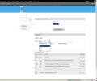
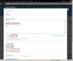
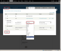
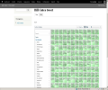

The Pivotviewer Module for Drupal allows users to include
a Silverlight PivotViewer control in their content pages like Articles and Basic Pages. The Silverlight PivotViewer makes it easier to interact with massive amounts of data
and visualize them in a way that exposes value from the group.
This module works on Drupal 7 version.
It requires Drupal to be running on IIS with .NET Framework 4.0 version.
The module is supported on Internet Explorer 8.0, Google Chrome 8.0 and Mozilla Firefox 3.6 browsers.
Download
The latest version of the Pivotviewer module can be downloaded from the
project site.
License This software is released free of charge under the terms of the GNU General Public License v2.
The license document is available here.
Install To install the module, download the file pivot_viewer.zip and
extract the contents to Drupal folder sites/all/modules.
This module can also be installed from the Module Upload UI. Next login as the Drupal
administrator, under the Modules page you will find the PivotViewer
module, enable the module and click on the
Save Configuration button. Then disable Clean URLs from Configuration -> Clean URLs -> Uncheck checkbox.
Note:To get the PivotViewer module working on Drupal 7, you need to also download the file web.config
from the project site and copy it in Drupal's root folder. This web.config file contains a URL rewrite condition to
ignore the PivotViewer module folder. This path needs to be modified according to the Drupal installation root. This is a workaround to fix a temporary issue.
In case the web.config in Drupal's root folder has been modified, add the following condition to the rule "Short URLs" <add input="{URL}" pattern="^.*/sites/all/modules/pivot_viewer/addpivotcontrol/" ignoreCase="false" negate="true" />
If Drupal is installed behind a firewall, the network proxy details need to be updated by adding the following XML element in the file
sites/all/modules/pivot_viewer/addpivotcontrol/web.config. Under the root 'Configuration' element add the following element
<system.net>
<defaultProxy>
<proxy bypassonlocal="True" proxyaddress="http://IPAddress:Port"/>
</defaultProxy>
</system.net>
Before using the PivotViewer module, it has to be configured. The PivotViewer
administration page can be accessed from the Modules
page by clicking on the Configure link beside the PivotViewer module. Here you can configure the different data sources
that the PivotViewer can interact with.
The module supports data sources of type OData,
Windows Azure Blob,
Twitter,
Media Folder, and
Pivot Collection
The administration page also allows the administrator to associate PivotViewer
with available content types. Click on the 'Save Configuration' button
after selecting the required content types.
Here is a screenshot of the PivotViewer administration page.

Usage of the module within content types To embed a PivotViewer control in your content, you need to place the
{pivotviewer} macro in the content (Article, Basic Page) text. Also, the Text Format
of the content (Article, Basic Page) should be set to 'Full HTML'. The macro can be generated
by using the 'Add PivotViewer' button in the Create content (Article, Basic Page) page.

The 'Add PivotViewer' button is automatically associated with all existing content types like Article and Basic Page.
To view the button during creation of newly added content types,
it has to be associated with the content types as shown in the
below screenshot.

The macro allows users to select the data source which the PivotViewer control should load.
This macro should be copied in the content text.
Once the content (Article,
Basic Page) has been saved with the {pivotviewer} macro, a PivotViewer control will
be displayed in its place on viewing the content.
A saved Drupal Basic Page containing a PivotViewer will look something like this.
